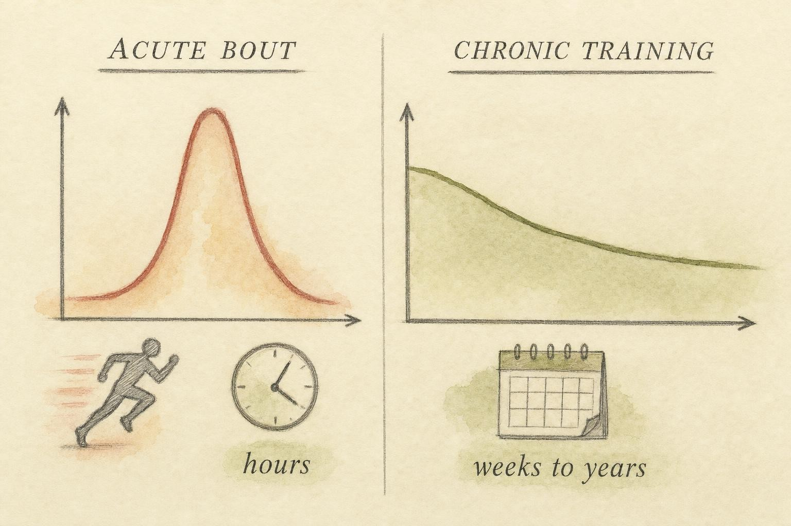
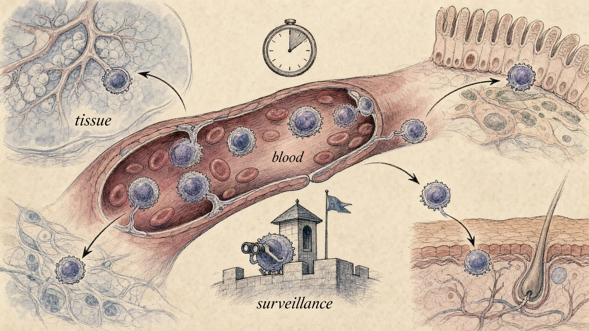

The Athlete's Paradox: Exercise Immunology and the Open Window
Does exercise strengthen or weaken immunity? "It depends" , and how to grade the evidence for yourself.
A runner crosses the finish line of a marathon. Her legs are trashed, her glycogen is gone, her cortisol is elevated, and , according to a claim you have almost certainly heard , her immune system has just thrown open a "window" through which pathogens can slip for the next several hours. A cold three days later would seem to confirm it. For nearly three decades this story was one of the most repeated in all of exercise science: train moderately and you get sick less; train to exhaustion and you get sick more.
It is a tidy narrative. It is also, in several of its most famous specifics, contested. Some of the observations underneath it are robust; others rest on measurements that may mean something completely different from what the original interpretation assumed. This chapter is not really about whether exercise is "good" or "bad" for immunity , that framing is too crude to survive contact with the data. It is about learning to read a body of evidence that includes a genuinely well-supported region, a genuinely contested region, and a set of measurements whose meaning was quietly reversed once people looked more carefully. In other words, it is a masterclass in evidence-grading disguised as a chapter about fitness.
Why does a question about marathon runners and colds deserve a full chapter in a course on immunology? Because exercise immunology is a compact rehearsal of nearly everything this course has been building toward: hormesis, the double-edged nature of the stress axis, and the discipline of asking what a single measurement , a blood cell count, a self-reported sore throat , can and cannot tell you. Coaches, team physicians, and fitness writers all cite this same literature to justify very different pieces of advice, from "never train hard while fatigued" to "the whole open-window idea has been debunked, train as hard as you like." By the end of this chapter you should be able to see why both of those blanket claims overreach the evidence, and what a defensible, honest statement sounds like instead.
Exercise as a controlled physiological stressor
We arrive here with two ideas already in hand. In Chapter 5 we met hormesis: the principle that a dose of a stressor which would be harmful in large or chronic amounts can, in small and intermittent amounts, provoke an adaptive response that leaves the system more robust than before. In Chapter 6 we traced the stress axis , the hypothalamic-pituitary-adrenal (HPA) cascade and the sympathetic nervous system , that floods the body with cortisol and catecholamines (adrenaline and noradrenaline) when it perceives a challenge.
Exercise sits squarely at the intersection of these two ideas. A single bout of vigorous exercise is, physiologically, a stressor: it raises core temperature, releases catecholamines within seconds and cortisol within minutes, mobilizes fuel, and produces mechanical and metabolic disturbance in working muscle. Pedersen and Hoffman-Goetz (2000), in a foundational review, explicitly framed exercise as "a model of temporary immunosuppression occurring after physical stress," and catalogued the neuroendocrine mediators , catecholamines, cortisol, growth hormone, β-endorphin , that reshape the immune compartment during and after a hard effort.
But here is the crucial move, and it is the move that organizes the entire chapter. Whether that stress is helpful or harmful depends overwhelmingly on timescale and dose. We must rigorously separate two questions that the popular narrative constantly blurs together.
A refresher: the cells that show up in this chapter
Because this chapter leans on immune cell biology introduced earlier in the course, it is worth a compact refresher before the mechanisms get dense. The immune system is conventionally split into two overlapping branches. The innate immune system is the fast, non-specific first responder: neutrophils (short-lived phagocytic cells that engulf and destroy microbes), monocytes and the macrophages they become in tissue (larger phagocytes that also coordinate the response by releasing cytokines), dendritic cells (sentinels that capture antigens and carry them to lymph nodes to start an adaptive response), and natural killer (NK) cells (lymphocytes that kill virus-infected or cancerous cells without needing to recognize a specific, pre-learned antigen).
The adaptive immune system is slower to mobilize but highly specific and equipped with memory: CD4+ helper T cells (which coordinate the response by signaling to other immune cells), CD8+ cytotoxic T cells (which kill infected cells they specifically recognize), and B cells (which mature into plasma cells that secrete antibodies, also called immunoglobulins, the Y-shaped proteins that tag pathogens for destruction or neutralize them directly). Cutting across both branches are the cytokines, small signaling proteins , interleukins, interferons, tumor necrosis factor , that immune cells use to coordinate with one another, and which we will see muscle itself can also produce.
Two neuroendocrine messengers, two timescales of their own
The mediators Pedersen and Hoffman-Goetz catalogued do not all act on the same clock, and that internal mismatch turns out to matter for everything that follows. Catecholamines act within seconds: adrenaline and noradrenaline bind beta-adrenergic receptors on the surface of leukocytes (white blood cells) and on blood vessel walls, and this drives an almost immediate redistribution of cells that were sitting parked along vessel walls , a state called margination , back into free circulation, a process called demargination. This is why a blood draw taken in the middle of a hard workout shows a striking spike in circulating NK cells and neutrophils: nothing new has been manufactured, cells already present in the body have simply been shaken loose into the bloodstream.
Cortisol works on a slower, gene-level clock. It takes roughly 30 to 120 minutes to peak in blood after a stressor begins, and it acts by binding intracellular glucocorticoid receptors that travel to the nucleus and alter gene transcription. Among its many effects, cortisol promotes the movement of certain lymphocytes out of the blood and into lymphoid tissue such as the spleen, lymph nodes, and bone marrow, and it dampens transcription of several pro-inflammatory genes. Because cortisol peaks well after catecholamines, the immune cell counts measured in the hours after a hard bout are shaped by a second, later wave of trafficking layered on top of the first. Keeping the two messengers and their two clocks straight is essential background for the redistribution mechanism we return to later in the chapter.
Two timescales: the acute bout versus chronic training
The single most important conceptual tool in this chapter is the distinction between two entirely different phenomena that happen to involve the same activity.
The acute bout
The acute effects are what happens during, and in the hours immediately following, one session of exercise. During a hard effort, the number of immune cells circulating in your blood changes dramatically and within minutes. Neutrophils and natural killer (NK) cells surge into the bloodstream, driven largely by catecholamines that shear marginated cells off vessel walls. Then, in the hours after a prolonged intense bout, several measurable immune functions dip: Gleeson (2007) reports temporary depression of neutrophil respiratory burst, lymphocyte proliferation, and monocyte antigen presentation lasting roughly 3-24 hours post-exercise. This transient dip is the raw observation behind the open-window hypothesis , and, as we will see, the interpretation of that dip is exactly where the field fractures.
The chronic adaptation
The chronic effects are what happens to a body that trains regularly for weeks, months, and years. These are adaptations, not acute perturbations. Regular moderate exercise is associated with lower resting systemic inflammation, downregulation of toll-like receptors on monocytes, favorable shifts in cytokine balance, and , epidemiologically , fewer self-reported upper respiratory tract infections than a sedentary lifestyle produces (Gleeson, 2007; Walsh et al., 2011). Campbell and Turner (2018) go further, marshalling evidence that regular exercise across the lifespan may slow the age-related decline of immune competence , an effect they place under the umbrella of enhanced immune "fitness."
Confusing these two timescales is the single most common error in reading exercise-immunology claims. A transient post-marathon dip in one salivary marker tells you nothing about whether the marathoner's chronic immune competence is high or low , and vice versa. Keep them apart.
The traffic system beneath the numbers
It helps to know, even briefly, how a cell decides where to go, because this mechanism resurfaces later as the crux of the whole debate. Immune cells do not drift passively through the body; their movement is directed by adhesion molecules (surface proteins that let a cell grip a blood vessel wall or a tissue surface) and by chemokines (small signaling proteins that form concentration gradients cells can sense and move toward, rather like a scent trail). Different lymphocyte subsets carry different combinations of these molecules, which effectively assigns each subset a preferred destination. NK cells and a subset of CD8+ T cells called effector memory cells carry surface markers built for rapid tissue entry and carry unusually dense populations of beta-adrenergic receptors, which is exactly why catecholamines mobilize them so efficiently. Naive T cells and most B cells, by contrast, carry the adhesion molecule L-selectin, which is built for recirculating through lymph nodes rather than for entering peripheral tissue, and they are mobilized far less by a bout of exercise. So even the first-glance number, "lymphocyte count in blood," is secretly an average over several populations with quite different jobs and destinations , a detail that becomes important once we ask where the missing post-exercise lymphocytes actually go.

Two questions the popular narrative constantly blurs: one bout versus a life of training." data-image-idx="0" style="display:block;max-width:100%;max-height:75vh;height:auto;width:auto;margin:0 auto;cursor:pointer;">The J-curve: a model of infection risk
In 1994, David Nieman proposed a model that has structured the field ever since. Plotting risk of upper respiratory tract infection (URTI) on the vertical axis against exercise workload on the horizontal axis, he argued that the published data traced out a J-shaped curve. Read left to right: a sedentary person carries an average risk; a moderately active person sits below average, apparently protected; and a person performing excessive high-intensity exercise rises above average, apparently at elevated risk (Nieman, 1994).
The shape is worth dwelling on, because it is precisely the shape hormesis predicts. The descending left arm of the J is the adaptive, beneficial dose. The ascending right arm is the same stressor pushed past the point where the system can profitably adapt to it. The J-curve is, in effect, a hormetic dose-response curve for infection risk. That elegance is part of why it spread so quickly , and part of why we should be careful, because an elegant model that fits our prior expectations is exactly the kind we most need to interrogate.
Nieman himself was appropriately cautious. His original paper explicitly acknowledged that larger samples and improved study designs were needed "before the model can be fully accepted." That caution has often been stripped away in retelling. The International Society of Exercise and Immunology's consensus position statement (Walsh et al., 2011) endorses the model's broad shape while candidly listing the methodological problems that limit interpretation of the underlying studies.
Where the evidence came from, and its built-in limits
It is worth knowing what kind of study actually produced this curve, because the design shapes how much weight the conclusion can bear. Much of the founding evidence came from observational cohorts: for instance, comparing runners who completed a long race with similarly trained runners who did not start it, then counting self-reported respiratory symptoms over the following one to two weeks. This design cannot randomly assign people to "run a marathon" or "sit this one out" , race participation is a choice, and the people who choose to race, and to train enough to finish, may differ from those who do not in ways that have nothing to do with exercise itself (a general problem called confounding, and specifically here a version of "healthy-user bias"). The outcome measure was typically a symptom diary filled in by the participant, not a laboratory-confirmed diagnosis, which opens the door to recall bias (remembering symptoms more vividly after a big event) and to misclassifying non-infectious symptoms as infections, a problem we will return to. None of this means the observed pattern is wrong; it means the pattern is a correlation generated under real-world constraints, not a controlled experiment, and it should be graded with that ceiling in mind.
Where the evidence is strong, and where it is weak
The two arms of the J are not equally well supported, and this asymmetry is the heart of honest evidence-grading. The left arm , moderate training lowers infection risk relative to sedentary living , is supported by multiple lines of evidence and is broadly agreed upon even by skeptics. Notably, in the structured debate assembled by Simpson et al. (2020), authors on both sides of the argument concede that short-duration moderate exercise benefits host immunity. Part of the plausibility comes from mechanism: regular, moderate, repeated bouts of catecholamine-driven NK cell mobilization may function as a kind of recurring immune "patrol," while chronic moderate exercise is independently associated with lower resting systemic inflammation, which likely improves the immune system's overall regulatory tone rather than any single measurable cell count.
The right arm , that heavy training raises infection risk , is far more fragile. Much of it rests on self-reported URTI symptoms after events like marathons. But post-race sniffles, sore throats, and coughs are frequently not infections at all: they can be airway inflammation from hours of high ventilation of cold or dry air, allergic responses, or non-infectious mucosal irritation. When investigators have actually swabbed athletes and looked for pathogens, a substantial fraction of "infection" symptoms had no identifiable infectious cause. This is a classic case where the outcome measure , symptom self-report , may not measure the thing the model claims it measures.
Overreaching, overtraining, and the limits of adaptation
The right arm of the J-curve asks what happens when training load gets very high. A closely related, more clinical question asks what happens when it gets high too fast, or stays high without adequate recovery. Sports medicine recognizes a spectrum here, and knowing the vocabulary helps you read the immunology literature without over-interpreting it.
Functional overreaching (FOR) is a deliberate, short-term increase in training load that causes a temporary dip in performance, followed by full recovery and a performance gain once training eases off, a pattern coaches call supercompensation; this is, in effect, planned overload used as a training tool. Push the same overload further or longer without recovery and you risk non-functional overreaching (NFOR), where the performance decline persists for weeks rather than days and recovery is slower and less certain. At the far end of the spectrum sits overtraining syndrome (OTS), a persistent state of underperformance, fatigue, and mood disturbance that can last months, accompanied by hormonal changes (including a blunted or dysregulated HPA-axis response to stress) and immune disturbances. OTS is diagnosed only after other medical causes of fatigue have been ruled out, which is itself telling: it does not yet have one clean, agreed-upon biological marker.
Because OTS sits at the far right of both the training-load axis and the fatigue axis, it has long been tempting to treat it as the clearest proof of the open window's right arm: surely the athlete who has trained herself into overtraining syndrome is also the athlete whose immune system has been ground down. Two older, specific mechanistic stories tried to explain exactly how, and both are useful case studies in how an appealing mechanism can outrun its evidence.
The first was the glutamine hypothesis. Glutamine is an amino acid used as fuel by rapidly dividing cells, including lymphocytes, and plasma glutamine concentration does fall during prolonged, heavy training. The hypothesis proposed that this fuel shortage directly starves immune cells and impairs their function, tightening the link between overtraining and infection risk. It is a clean, mechanistically satisfying story. It has not held up well: trials supplementing athletes with glutamine to restore plasma levels have generally failed to reduce URTI rates, which is difficult to reconcile with glutamine depletion being the operative cause. The hypothesis is a useful reminder that a plausible biochemical mechanism is not the same thing as a demonstrated causal pathway, and that the decisive test of a mechanism is often an intervention that reverses it.
The second, related idea is sometimes called the cytokine hypothesis of overtraining: that repeated, unresolved muscle damage from excessive training load drives a chronic, low-grade elevation of pro-inflammatory cytokines, and that this chronic inflammatory tone, rather than any single post-exercise dip, is what erodes immune regulation and mood over time in genuine overtraining syndrome. This idea remains plausible and is consistent with the general principle, previewed at the end of this chapter, that a resolving inflammatory pulse and an unresolved inflammatory plateau are fundamentally different biological states. But as with the right arm of the J-curve itself, direct evidence in humans is harder to obtain than the story is easy to tell, and OTS is uncommon enough, and confounded enough by co-occurring sleep loss and energy restriction, that isolating exercise-driven inflammation as the specific cause remains an open empirical question rather than a settled fact.
The open-window hypothesis
If the J-curve describes the epidemiology, the open-window hypothesis proposes the mechanism for its contested right arm. The idea, developed through the 1990s, is that after prolonged intense exercise, immune function is transiently suppressed , for perhaps 3 to 72 hours , creating a "window" during which pathogens encountered at the mucosal surface are more likely to establish infection.
The hypothesis rested on three pillars of observation, and understanding each pillar is essential, because the modern critique dismantles them one by one:
- Increased self-reported infections after heavy exertion (the epidemiological claim).
- Falling salivary IgA , a drop in the secretory antibody that guards mucosal surfaces , after prolonged exercise (the mucosal claim).
- A sharp fall in circulating lymphocytes in the hours after exercise, dropping below pre-exercise levels (the cellular claim).
On their face, these three observations look like a coherent picture of a suppressed immune system. The power of Campbell and Turner's (2018) landmark review , provocatively titled "Debunking the Myth of Exercise-Induced Immune Suppression" , is that it takes each pillar in turn and argues that it does not show what it was assumed to show.
Pillar one: the infection data are thin
We have already met this problem. The evidence that vigorous exercise per se raises infection risk is, Campbell and Turner argue, limited and reliant on unconfirmed symptom reports. Much of what looks like infection may be non-infectious airway inflammation, and much of the elevated risk in athletes may reflect confounders that travel with hard training: disrupted sleep, restricted energy intake, psychological and travel stress, and dense crowds at competitions. Simpson et al. (2020) identify precisely this as the field's central unresolved question , whether arduous exercise itself suppresses immunity, or whether nutrition, sleep, and stress are doing the causal work.
Pillar two: salivary IgA is not a clean readout
To evaluate this pillar you need to know what secretory immunoglobulin A (IgA) actually is. It is the dominant antibody class found in mucosal secretions , saliva, tears, and the mucus lining the gut and respiratory tract , produced locally by plasma cells beneath the mucosal surface and exported across the epithelial lining. Functionally, it acts like a first coat of paint over the body's frontier surfaces, binding and neutralizing pathogens before they ever attach to a cell. A genuine, sustained drop in mucosal IgA output would be a biologically meaningful finding.
But post-exercise drops in salivary IgA were originally measured as concentration , the amount of IgA per milliliter of saliva , and concentration is notoriously sensitive to saliva flow rate, which a hard bout of exercise changes dramatically through dehydration, mouth breathing, and altered autonomic tone. A falling concentration can simply reflect a more dilute, faster-flowing, or differently composed sample rather than a genuine collapse in the rate at which IgA is being secreted. Studies that instead calculate the IgA secretion rate (concentration corrected for flow) tend to find smaller, less consistent changes than concentration alone suggested. Campbell and Turner argue the raw IgA evidence does not support the immunosuppression interpretation it was originally recruited for.
Pillar three: the lymphocytes did not disappear , they redeployed
This is the most important reframing in the whole chapter, so read it slowly. After intense exercise, the number of lymphocytes in a blood sample really does fall below baseline. The old interpretation: cells are being destroyed or suppressed , the immune system is failing. The reframed interpretation, supported by cell-tracking and adhesion-molecule studies: the cells have left the blood and gone somewhere useful.
The picture Campbell and Turner (2018) advance is a two-phase, catecholamine- and cortisol-driven lymphocyte redistribution, and it builds directly on the trafficking mechanics introduced earlier in this chapter. During exercise, the fast catecholamine wave mobilizes NK cells and effector-memory CD8+ T cells (the subsets built with dense beta-adrenergic receptors and tissue-homing adhesion molecules) into the circulation , blood counts spike. In the hours after exercise ends, as the slower cortisol wave peaks and adhesion-molecule expression shifts, those same cells egress from the blood and traffic into peripheral tissues: the gut, the lungs, the skin, the mucosal surfaces , exactly the frontier sites where a pathogen would try to enter. The low blood count is not a hole in the defenses; it is a snapshot taken while the guards have marched out to the border. Far from immunosuppression, this looks like a transient state of heightened immune surveillance. Blood is simply a transit medium, and counting cells in transit tells you where they aren't, not that they're gone.
The positive evidence: vaccination during the "window"
The cleanest test of a hypothesis is often to do the thing it forbids. If the post-exercise period were genuinely immunosuppressed, mounting a fresh immune response then should be impaired. Instead, several vaccination studies reviewed by Campbell and Turner (2018) show that administering a vaccine after , or even during , a bout of exercise can enhance the subsequent antibody response rather than blunt it. A window that improves your response to a novel antigen is a strange kind of suppression.
The mechanism proposed is consistent with the redistribution story rather than opposed to it. Mounting an antibody response to a vaccine requires dendritic cells and macrophages to capture the injected antigen and carry it to a draining lymph node, where they present it to naive T and B cells and set the adaptive response in motion. Exercise transiently increases blood flow, immune cell trafficking, and lymph flow through exactly this circuit. Rather than a general dampening of immune activity, the post-exercise period appears to be a state of altered, and in this particular respect enhanced, trafficking, which is a very different biological claim from suppression.

The reframing: post-exercise lymphopenia may mark cells redeploying to frontier tissues, not vanishing." data-image-idx="1" style="display:block;max-width:100%;max-height:75vh;height:auto;width:auto;margin:0 auto;cursor:pointer;">How to hold the debate in your head
It would be a mistake to walk away thinking the open-window hypothesis has been simply "disproven" and replaced by a tidy new consensus. The field's own leaders staged a formal, structured debate precisely because the question remains genuinely open. Simpson et al. (2020) assembled the biggest names , Gleeson, Nieman, Walsh on questions of susceptibility; Campbell and Turner on the redistribution reframing , to argue both sides in print. The honest summary of where they landed is worth memorizing, because it models mature scientific disagreement:
- Both camps agree that infection susceptibility is multifactorial, and that short-duration moderate exercise benefits host immunity. The left arm of the J-curve is not in dispute.
- The "Yes, exercise can increase susceptibility" camp points to clinical and epidemiological data on elite athletes reporting real, disruptive illness clusters around heavy competition.
- The "No" camp questions whether exercise itself is causative, or whether the illness travels with confounders , poor sleep, energy deficit, psychological stress, pathogen-dense environments , that heavy training and competition drag along with them.
Notice that both camps can be substantially right. Elite athletes may indeed get sick more often around competition (an epidemiological fact) without exercise per se being the immunological cause (a mechanistic claim). Distinguishing correlation-in-a-population from mechanism-in-a-cell is exactly the discipline this course is trying to build in you. The right arm of the J-curve, then, is best held as plausible but unproven, and quite possibly confounded , not as an established fact and not as a debunked myth.
There is also a useful lesson here about how science corrects itself. The redistribution reframing did not arrive by anyone discovering that the original researchers had made an error of measurement; the raw observations (falling blood lymphocyte counts, falling salivary IgA concentration, more reported symptoms) are still exactly what they were in the 1990s. What changed was the interpretive layer laid on top of those observations, once better tools for tracking where cells actually go, and better appreciation of how confounded self-report data can be, became available. A field that can revisit its own founding interpretation without discarding the underlying data is behaving exactly as a healthy science should.
Both groups agree that susceptibility to infection is multifactorial and that short bouts of moderate exercise are beneficial for host immunity , the disagreement concerns whether arduous exercise itself, rather than its accompanying stressors, suppresses immune defense.
Paraphrasing the structured debate in Simpson et al. (2020)
Confounders in the athlete's world: energy, sleep, and stress
If the right arm of the J-curve is genuinely confounded, it is worth naming the confounders precisely, because each one has its own, independently documented relationship with immune function, separate from exercise itself.
Low energy availability
Energy availability is defined as dietary energy intake minus the energy expended in exercise, expressed relative to an athlete's fat-free mass; it is, in effect, the fuel left over for the body's basic operations once training has taken its cut. Low energy availability (LEA) occurs when that remainder is insufficient to support normal physiological function, and it is the physiological core of a broader condition called Relative Energy Deficiency in Sport (RED-S), which can affect athletes who are training hard while under-fueling, whether intentionally or not. LEA has its own documented immune footprint, including altered leukocyte counts and reduced secretory IgA, independent of the training load itself. An athlete piling on mileage while also restricting food intake is running two suppressive stressors at once, and a study that only measures "training load" risks attributing LEA's effects to exercise.
Sleep
Sleep loss has an immune signature of its own: reduced NK cell activity, an altered balance of circulating cytokines, and a blunted antibody response to vaccination in people who are chronically short on sleep. Heavy training blocks routinely compress sleep, through early starts, evening sessions, travel across time zones for competition, and the sheer difficulty of falling asleep when the sympathetic nervous system is still activated after a late hard session. Because heavy training and short sleep travel together so reliably in the real world, any study of "heavy training and infection risk" that does not separately measure sleep is at risk of crediting exercise with an effect that sleep loss produced.
Psychological and environmental stress
Chapter 6 established that the HPA axis responds to psychological threat as readily as to physical exertion. Competition brings its own stack of stressors, largely independent of the exercise itself: performance anxiety, unfamiliar environments, travel fatigue, and crowded athlete villages or team buses that concentrate respiratory pathogens in a way an athlete's normal training environment does not. Each of these can activate the same cortisol and catecholamine pathways discussed earlier in this chapter, and each can plausibly raise infection risk on its own, with no need to invoke exercise-induced immunosuppression at all.
None of this proves that exercise itself is innocent. It shows why isolating exercise as the specific cause of illness clusters around competition is a genuinely hard empirical problem, and why Simpson et al. (2020) treat it as still open rather than resolved in either direction.
What both camps actually recommend
Despite disagreeing about mechanism, researchers on both sides of this debate converge on remarkably similar practical guidance, which is itself informative: when experts who disagree about causation still agree about what to do, the agreed-upon advice is usually resting on the sturdiest ground. The following points are educational summaries of well-established sports-science practice, not individualized medical advice, and an athlete with a genuine, recurring illness problem should be evaluated by a sports medicine physician rather than self-manage from a course chapter.
- Progress training load gradually. Large, abrupt increases in training volume or intensity are more strongly associated with overreaching and injury than high absolute load reached gradually. Coaches often use rough heuristics, such as limiting week-to-week increases, as a starting discipline; the precise numeric rule is debated, but the underlying principle, avoid sudden spikes, is not.
- Fuel around hard sessions. Carbohydrate intake during prolonged exercise measurably blunts the rise in cortisol and catecholamines and attenuates the size of the post-exercise dip in several immune function markers compared with exercising in a carbohydrate-depleted state. This is one of the more direct, mechanistically grounded pieces of the whole literature: change the metabolic stress, and the immune perturbation changes with it.
- Protect sleep, especially around competition. Given sleep's independent immune footprint, treating sleep as a trainable, protected variable, rather than the first thing sacrificed to travel or late sessions, addresses one of the most robust confounders directly.
- Practice ordinary hygiene in high-density athlete environments. Hand hygiene and avoiding close, prolonged contact with visibly symptomatic teammates reduce pathogen exposure regardless of whether exercise itself has any suppressive effect.
- Distinguish mild, localized symptoms from systemic illness. A common, general rule of thumb in sports medicine is that symptoms confined "above the neck" (a mild runny nose, for instance) are usually compatible with continuing light training, while systemic symptoms (fever, body aches, chest symptoms) warrant rest; this is a widely used clinical heuristic, not a laboratory-derived law, and individual judgment and medical advice should override it when in doubt.
- Taper before major competition. A planned reduction in training load in the days to weeks before an important event allows accumulated fatigue, whatever its exact immunological signature, to dissipate before the highest-stakes exposure window.
Notice what this list is not: it is not "avoid hard training," and it is not "the open window is a myth so train through anything." It is a set of load-management, fueling, sleep, and hygiene practices that both the "Yes" and "No" camps in Simpson et al. (2020) would recognize as sensible, precisely because they target the confounders and mechanisms that are well established, rather than betting everything on the contested right arm of the J-curve.
The return of IL-6: the same molecule, two stories
In Chapter 3 we met the cytokines as the chemical vocabulary of inflammation, and interleukin-6 (IL-6) appeared there as a pro-inflammatory alarm signal , the molecule that helps drive fever and the acute-phase response, and whose chronic elevation is a hallmark of disease. So it may surprise you to learn that IL-6 is also one of the great heroes of beneficial exercise physiology. Resolving that apparent contradiction is the perfect capstone for the course's central theme: context, not identity, determines whether an inflammatory signal is helpful or harmful.
Muscle is an endocrine organ
The breakthrough came when Pedersen and colleagues established that contracting skeletal muscle is not merely a motor , it is a secretory, endocrine organ. Muscle fibers under contraction release signaling proteins into the bloodstream, and Pedersen et al. (2007) coined the term myokines for these muscle-derived cytokines. IL-6 was the first myokine identified, and its behavior during exercise is spectacular: Pedersen and Febbraio (2008) document that circulating IL-6 can rise up to 100-fold during prolonged exercise, produced by the working myocytes themselves.
What switches this production on inside the muscle fiber is itself informative. Contraction depletes local muscle glycogen and activates AMP-activated protein kinase (AMPK), an enzyme that functions as the cell's fuel gauge, becoming active when the ratio of spent to available energy currency rises. Active AMPK, along with the mechanical and calcium signals of repeated contraction, promotes transcription of the IL-6 gene inside the myocyte. Critically, this exercise-induced IL-6 is released independently of preceding tumor necrosis factor-alpha (TNF-α) and other classic inflammatory triggers. In chronic disease, IL-6 typically rises downstream of TNF-α as part of a self-sustaining inflammatory cascade. In exercising muscle, IL-6 is switched on by contraction and fuel demand , a fundamentally different upstream context, arising from an energy sensor rather than an inflammatory trigger.
The IL-6 paradox, resolved by context
Here is the paradox stated plainly. In the setting of obesity, insulin resistance, and chronic low-grade inflammation, elevated IL-6 is a marker , and a mediator , of metabolic disease. Yet exercise, which is one of the best interventions for those same conditions, transiently raises IL-6 far higher than chronic disease ever does. How can the same molecule be a villain and a hero?
Part of the resolution lies in the receptor biology itself. IL-6 can signal through two different routes. In "classic" signaling, IL-6 binds a membrane-bound receptor found mainly on hepatocytes (liver cells) and some leukocytes, a route generally linked to regulatory and metabolic, rather than destructive, effects. In "trans-signaling," IL-6 instead binds a soluble, freely circulating version of its receptor, forming a complex that can then act on a much wider range of cell types, including vascular and connective tissue that lacks the membrane-bound receptor; this route is more strongly associated with the pro-inflammatory, tissue-damaging face of IL-6 seen in chronic disease. Which route dominates in a given setting depends on the surrounding cytokine environment, which is itself another way of saying that context, at the level of receptors and co-signals, is doing real biochemical work, not just providing a narrative frame.
Layered on top of that receptor-level context are three further contextual differences (Pedersen & Febbraio, 2008):
- Time course. Exercise IL-6 is a sharp transient spike that returns to baseline within hours. Disease IL-6 is a sustained low plateau that never resolves. Pulsatile signaling and chronic signaling engage different downstream programs.
- Upstream trigger. Exercise IL-6 is contraction-driven and TNF-α-independent; disease IL-6 is part of a TNF-α-led inflammatory loop.
- Downstream effects. The exercise spike triggers anti-inflammatory and metabolic follow-on: it stimulates release of the anti-inflammatory cytokines IL-10 and IL-1 receptor antagonist, inhibits TNF-α production, and promotes glucose uptake and fat oxidation , acting as an "exercise factor" that signals the liver and adipose tissue to mobilize fuel. Chronic disease IL-6, embedded in a pro-inflammatory milieu, drives the opposite metabolic and inflammatory trajectory.
IL-6 is not the only myokine, though it is by far the best characterized. Contracting muscle also releases interleukin-15, implicated in crosstalk between muscle and fat tissue, and a range of other signaling molecules whose full physiological roles are still being worked out; the myokine concept, established by Pedersen et al. (2007), opened an entire research program that extends well beyond IL-6 alone. But the core lesson generalizes from IL-6 to the whole family: a transient, contraction-driven cytokine pulse followed by an anti-inflammatory wave is a completely different biological event from a sustained, TNF-α-embedded cytokine elevation, even though a single blood assay might report the same molecule. This is the deepest lesson of the course, rendered at the level of one protein.
Exercise, aging, and immunosenescence
One of the more striking claims in Campbell and Turner's (2018) review concerns not a single bout of exercise but its accumulation across an entire lifetime, set against the backdrop of a process called immunosenescence: the gradual decline in immune function that accompanies normal aging. A central driver of immunosenescence is thymic involution, the shrinkage of the thymus, the gland in which T cells mature, which begins in early adulthood and continues steadily thereafter. As thymic output of fresh, naive T cells declines, the T-cell pool becomes dominated by memory cells shaped by a lifetime of past infections, and some of these accumulate features of a worn-out, less functional state sometimes called cellular senescence. The net clinical effect is well documented: older adults mount weaker antibody responses to vaccination and are more vulnerable to novel pathogens than younger adults with comparable exposure.
Campbell and Turner (2018) marshal evidence that habitually active older adults show a more favorable balance of naive to memory T cells, and in some studies, better-maintained markers of thymic output and stronger antibody responses to vaccination, compared with sedentary peers of the same age. If regular exercise across the decades genuinely slows immunosenescence, that would be a striking, clinically important benefit layered on top of everything else exercise is known to do for cardiovascular and metabolic health.
Honesty about the evidence requires a caveat, and it is the same caveat that applies to much of the J-curve's left arm: most of this evidence is cross-sectional, comparing groups of older adults who already differ in activity level, rather than a randomized trial that assigns sedentary older adults to take up exercise and then tracks their immune aging over years. Physically active older adults may differ from sedentary peers in diet, socioeconomic circumstances, baseline health, and many other variables that independently affect immune aging, so causal attribution to exercise itself, while plausible and consistent with known mechanisms, is not yet proven with the same rigor as, say, the acute catecholamine and cortisol responses documented earlier in this chapter. This is a genuine, promising research frontier rather than a closed case, and it is worth watching for exactly the kind of longitudinal and intervention evidence that would move it from plausible to established.
Worked examples: reading a claim critically
Let us put the whole apparatus to work on two claims of the kind you will meet in the wild.
Example one: the marathon claim
"Studies show that running a marathon suppresses your immune system for 72 hours, so athletes get sick more , you should skip intense workouts to stay healthy."
A composite of widely circulated fitness advice
Work through it in layers. First, separate the timescales. The claim is about the acute bout (one marathon), yet it smuggles in a recommendation about chronic behavior ("skip intense workouts"). Even if the acute claim were fully true, it would not follow that habitual intense training harms chronic immune competence , which the evidence suggests it generally does not.
Second, interrogate the outcome measure. "Get sick more" almost always rests on self-reported URTI symptoms, which we now know substantially over-count true infection because of non-infectious airway inflammation (Campbell & Turner, 2018).
Third, interrogate the mechanism. "Suppresses your immune system for 72 hours" leans on the post-exercise lymphocyte drop , the very observation now reinterpreted as redistribution and heightened surveillance rather than suppression.
Fourth, check for confounders. Marathoners around race day are sleep-disrupted, energy-depleted, travel-stressed, and packed into crowds , every one a plausible alternative cause (Simpson et al., 2020).
Fifth, grade the confidence. The protective effect of moderate training is robust and agreed. The harm from occasional hard efforts is contested and possibly confounded. A blanket "skip intense workouts to stay healthy" is not supported by the strong region of the evidence and over-reads the weak region. The scientifically defensible advice is far more modest: manage sleep, fueling, and stress around hard efforts , not avoid hard efforts.
Example two: the pre-competition illness claim
"A survey of elite swimmers found reported respiratory symptoms roughly doubled in the two weeks before major championships, proving the open window strikes hardest right before big competition."
A composite of the kind of claim drawn from real training-camp surveillance studies
Apply the same checklist. Timescale: the two weeks before a championship is typically a taper period, when training volume is deliberately reduced, not increased, which already complicates a simple "more training equals more illness" story. Outcome measure: again a self-report symptom survey, gathered from athletes who are, by the nature of the moment, hyper-attentive to every twinge in their own bodies as competition approaches, which plausibly inflates reporting independent of any change in true infection rate. Confounders: the two weeks before a championship typically bundle international travel across time zones, unfamiliar climates and altitudes, disrupted sleep, concentrated exposure to other athletes and staff from around the world in shared housing, and a spike in performance anxiety, every one of which has its own documented link to respiratory symptoms or immune markers, entirely apart from the training load itself, which is actually tapering downward at this point. Grading confidence: the observation, more reported symptoms before championships, is probably real and worth taking seriously operationally. But attributing it specifically to an exercise-induced open window, at precisely the moment training load is being reduced, is a weaker inferential leap than attributing it to travel, crowding, and anxiety, each of which independently predicts exactly this pattern.
Notice that at no point in either example did we need to declare the claim simply "true" or "false." We graded it region by region, layer by layer. That is the skill this whole chapter has been building.
Key Takeaways
- Exercise is a controlled physiological stressor; its immunological effect follows a hormetic, dose-and-timescale logic. Always separate the acute bout from chronic training adaptations , conflating them is the field's most common error.
- Catecholamines act within seconds via demargination; cortisol acts over 30 to 120 minutes via gene transcription and lymphocyte trafficking to lymphoid tissue. These two mismatched clocks together shape everything measured in blood after exercise.
- The J-curve (Nieman, 1994) proposes moderate training lowers infection risk while very heavy training raises it. Its two arms are not equally supported: the protective left arm is robust and agreed upon; the harmful right arm is contested, rests heavily on unconfirmed symptom reports, and stems largely from observational, non-randomized study designs.
- Overreaching and overtraining syndrome sit at the extreme right of the load axis. Two specific mechanistic explanations for a training-immunity link , the glutamine hypothesis and the cytokine hypothesis of overtraining , illustrate how a plausible mechanism can still lack decisive supporting evidence.
- The open-window hypothesis rested on three pillars , increased infections, falling salivary IgA, and post-exercise lymphopenia. Campbell and Turner (2018) argue all three have been misread: the infection data are thin, IgA concentration is confounded by saliva flow, and the lymphocyte drop reflects redistribution to peripheral tissues (heightened surveillance) via adhesion molecules and receptor biology, not destruction.
- Vaccination during the supposed "window" tends to enhance, not blunt, antibody responses , awkward evidence for a genuine suppression.
- Leading experts still formally debate whether arduous exercise itself, or its confounders (low energy availability, sleep loss, psychological and travel stress, crowding), drives illness in athletes (Simpson et al., 2020). Hold the right arm as plausible-but-unproven.
- Despite disagreeing on mechanism, both camps converge on similar practical guidance: progress training load gradually, fuel adequately (carbohydrate intake blunts the acute stress-hormone and immune response to prolonged exercise), protect sleep, and use ordinary hygiene around competition. This is education, not individualized medical advice.
- IL-6 is the same molecule in exercise and in disease, yet behaves oppositely: a transient, contraction-driven, TNF-α-independent, AMPK-linked spike with anti-inflammatory and metabolic follow-on (Pedersen & Febbraio, 2008) versus a sustained, TNF-α-embedded, trans-signaling-associated plateau of harm. Context , time course, trigger, receptor route, and downstream partners , determines the sign.
- Regular exercise across the lifespan is associated with a more favorable naive-to-memory T-cell balance and possibly slower immunosenescence, though most of this evidence remains cross-sectional and causally suggestive rather than proven.
We have seen a signal , IL-6 , flip from villain to hero depending on whether it arrives as a resolving pulse or a chronic plateau. In Chapter 8 we press on that idea of resolution: inflammation was long taught as something that simply fades away, but we now know it is actively switched off by dedicated pro-resolving mediators. What happens when that off-switch fails , and how does chronic, unresolved inflammation become the common soil of so many modern diseases?
References
Campbell, J. P., & Turner, J. E. (2018). Debunking the myth of exercise-induced immune suppression: Redefining the impact of exercise on immunological health across the lifespan. Frontiers in Immunology, 9, 648. https://doi.org/10.3389/fimmu.2018.00648
Gleeson, M. (2007). Immune function in sport and exercise. Journal of Applied Physiology, 103(2), 693-699. https://doi.org/10.1152/japplphysiol.00008.2007
Nieman, D. C. (1994). Exercise, infection, and immunity. International Journal of Sports Medicine, 15(S3), S131-S141. https://doi.org/10.1055/s-2007-1021128
Pedersen, B. K., & Febbraio, M. A. (2008). Muscle as an endocrine organ: Focus on muscle-derived interleukin-6. Physiological Reviews, 88(4), 1379-1406. https://doi.org/10.1152/physrev.90100.2007
Pedersen, B. K., & Hoffman-Goetz, L. (2000). Exercise and the immune system: Regulation, integration, and adaptation. Physiological Reviews, 80(3), 1055-1081. https://doi.org/10.1152/physrev.2000.80.3.1055
Pedersen, B. K., Åkerström, T. C. A., Nielsen, A. R., & Fischer, C. P. (2007). Role of myokines in exercise and metabolism. Journal of Applied Physiology, 103(3), 1093-1098. https://doi.org/10.1152/japplphysiol.00080.2007
Simpson, R. J., Campbell, J. P., Gleeson, M., Krüger, K., Nieman, D. C., Pyne, D. B., Turner, J. E., & Walsh, N. P. (2020). Can exercise affect immune function to increase susceptibility to infection? Exercise Immunology Review, 26, 8-22. https://pubmed.ncbi.nlm.nih.gov/32139352/
Walsh, N. P., Gleeson, M., Shephard, R. J., Gleeson, M., Woods, J. A., Bishop, N. C., Fleshner, M., Green, C., Pedersen, B. K., Hoffman-Goetz, L., Rogers, C. J., Northoff, H., Abbasi, A., & Simon, P. (2011). Position statement. Part one: Immune function and exercise. Exercise Immunology Review, 17, 6-63. https://pubmed.ncbi.nlm.nih.gov/21446352/